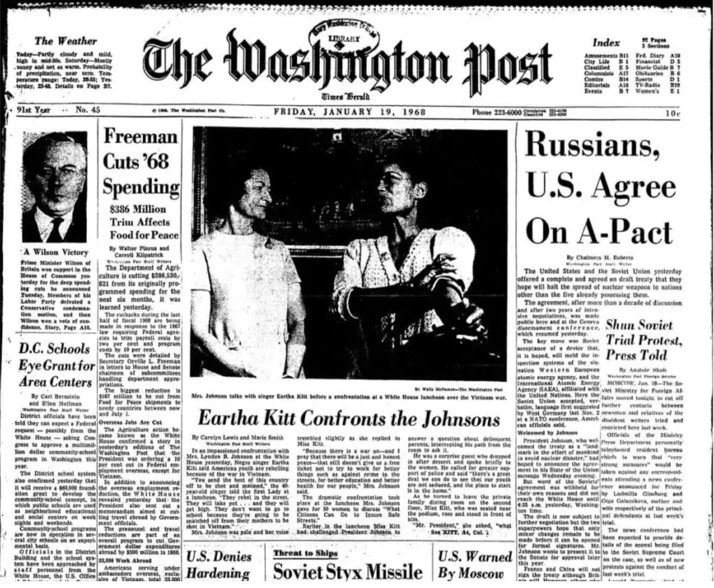

Five thousand women came together in Washington to protest the Vietnam War. Led by Jannette Rankin, these women marched from Union Station to the steps of the Capitol Building. When they got to the Capitol, they presented Peace petition to speaker of the House John McCormack. Rankin judged the overall effort a success, as it “scared the military enough to make them tell Johnson not to run again.” This became the largest march by women sinde the Women’s Suffrage Parade of 1913.
Photojournalism played an important role in this anti-war march through Washington because it was able to show how large scale the march was.
Batman star Eartha Kitt stood up during a luncheon inside the White House and blamed the President for the Vietman War and the draft. She confronted both Lyndon B. Johnson and Lady Bird Johnson. After this, Kitt was blacklisted in the U.S. and was forced to find work in Europe for many years.
Kitt made front page news in the Washington Post the next day after her outburst at the White House. Photojournalsim and the media was important when it came to this war protest. Kitt's outburst happened within closed doors at the White House, so without the media, the public would have never heard about this.
Protesters were outside the White House at all hours of the day carrying signs saying “Stop the War.” Chanting was so loud it could be heard from inside the White House. People were getting tired of the war because it started to seem like a war that couldn't be won.
Photojournalism showed the anti-war protests that spread across the U.S. Photographs during the 1968 White House protesting showed many protesters marching outside the gates.